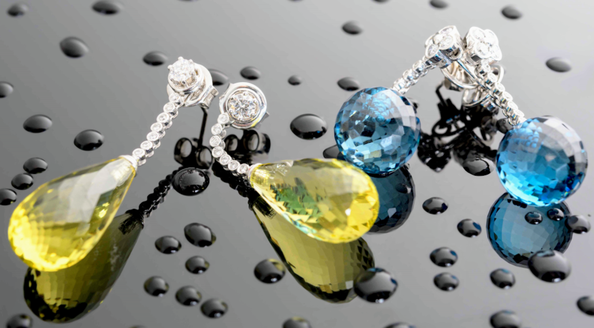
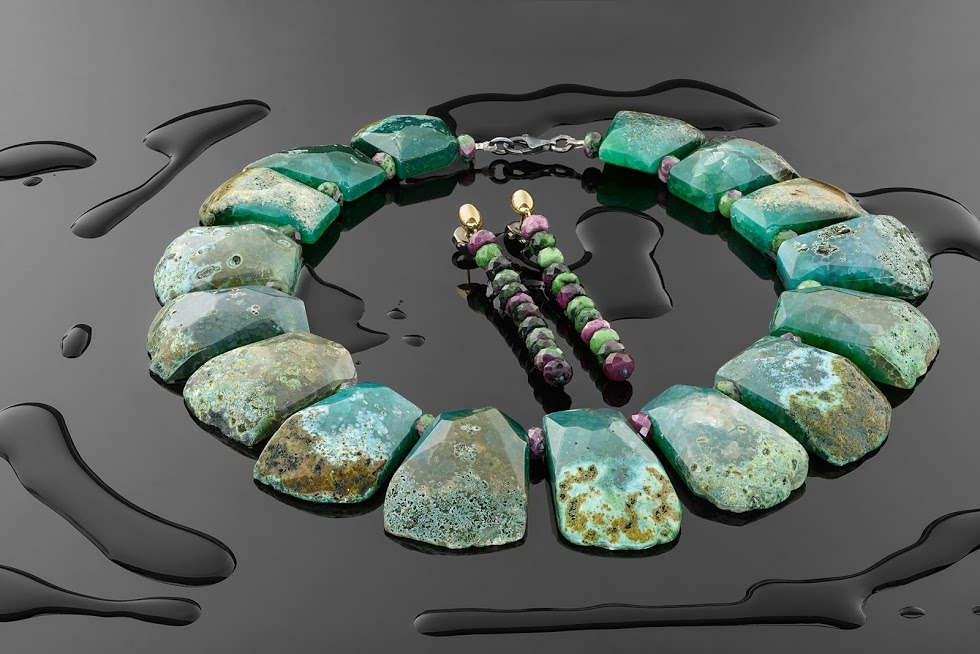

Estamos en pleno centro de A Coruña, en la Calle Riego de Agua. Ven a conocer nuestras joyas y nuestro taller artesano.
| Día | Mañana | Tarde |
|---|---|---|
| Lunes | 10:00 - 14:00 | 17:00 - 21:00 |
| Martes | 10:00 - 14:00 | 17:00 - 21:00 |
| Miércoles | 10:00 - 14:00 | 17:00 - 21:00 |
| Jueves | 10:00 - 14:00 | 17:00 - 21:00 |
| Viernes | 10:00 - 14:00 | 17:00 - 21:00 |
| Sábado | 11:00 - 14:00 | Cerrado |
| Domingo | Cerrado | |
Estamos en pleno centro de A Coruña, en la Calle Riego de Agua. Tienda y taller en el mismo espacio.
Estamos en una de las calles comerciales más conocidas de la ciudad, a pocos minutos a pie de los principales puntos de interés.
La Calle Riego de Agua está en pleno centro. A pocos minutos de la Plaza de Lugo, la Calle Real y la zona comercial principal de A Coruña.
Varias líneas de autobús urbano tienen parada cerca de la Calle Riego de Agua. Consulta las líneas que pasan por el centro en la web de la Compañía de Tranvías.
Parking público en las inmediaciones del centro histórico. La zona cuenta con parkings subterráneos a pocos minutos a pie de la tienda.

Todas nuestras joyas se diseñan y elaboran en nuestro taller de A Coruña. Piezas únicas con personalidad propia, pensadas como complementos de moda atemporales.

Nuestro taller está abierto a los clientes. Puedes venir a ver cómo trabajamos, conocer los materiales que utilizamos y consultar sobre encargos personalizados.